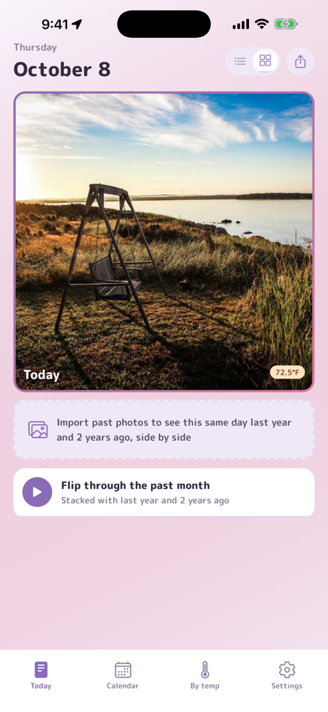
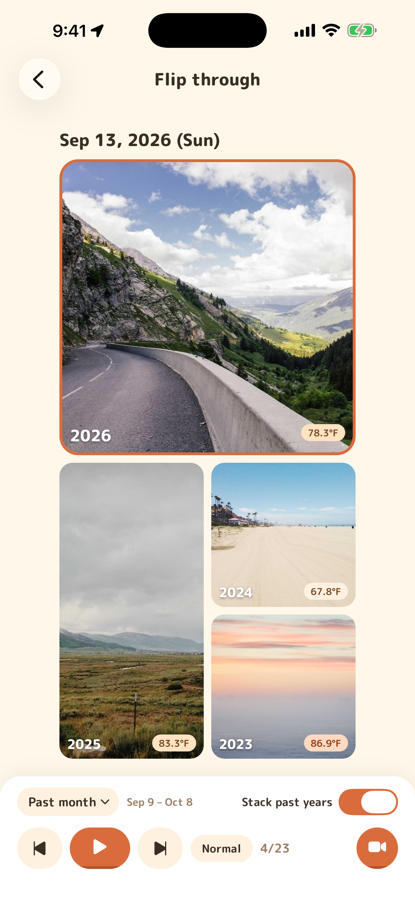
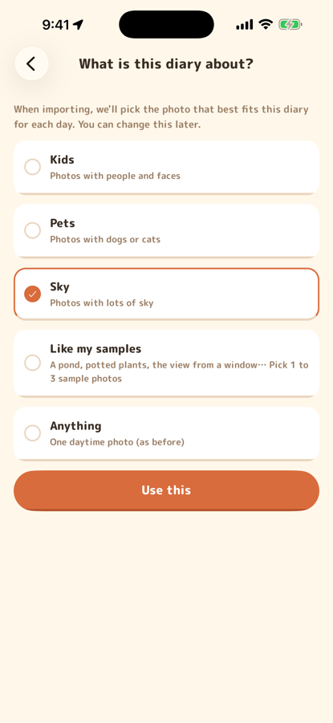
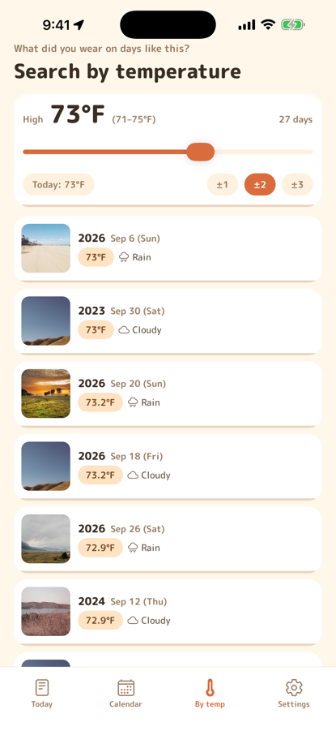
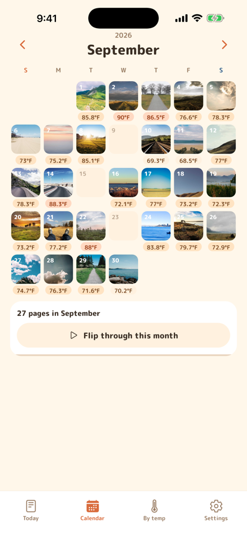
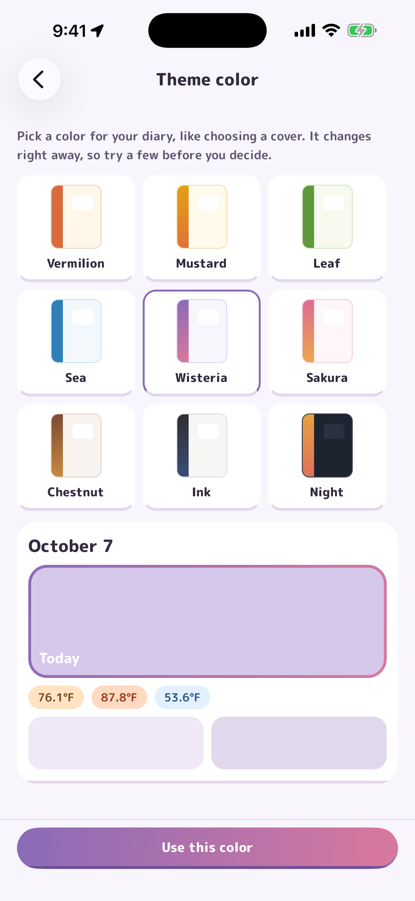

Kasane Diary
What did I wear the last time it was this warm?
A 3-year photo diary. Add one photo a day and the day's temperature and weather are attached automatically. Flip through today stacked with the same day in past years, and search your photos by temperature. Start by importing from your camera roll — in a few minutes, last year's today is already there.
Free, with a one-time Pro purchase for some features. iPhone and iPad. English, 日本語, 中文, 한국어.






What you can do
Search by temperature
See photos from past days that were about as warm as today. Your own record becomes a guide for what to wear and when to switch seasons.
Today, stacked with past years
Today, last week, last month, last year and 2 years ago on one page. If there's no photo on that exact day, the closest day within 3 days is shown.
Flip through the years
Flip day by day with today and the same days in past years side by side — a week, a month, three months or a year. Watch your kids grow or your garden change in a few seconds, and share it as a video.
Temperature and weather, automatically
Just take or pick today's photo. Place, temperature and weather are added for you, in °C or °F.
Start from your past photos
Import past photos from your camera roll and the temperature of each day is added afterwards (2 years free). Your 3-year diary starts on day one. Screenshots are skipped.
Pick the right photo for each day (Pro)
Choose kids, pets, sky, or "looks like this sample" (a garden bed, a houseplant, the view from your window), and the import picks the matching photo from each day. Photos are analyzed on your device only.
Send it to your family as a video
Turn a flip-through into a video, just as you see it on screen (stacked with past years, at your speed), and send it to family. Even a whole year fits in 5 minutes. You can also share a day's page as one image with the same day from past years.
Last time you were here
Pages from a trip show the pages from your earlier visits to the same place, so you can see how much the kids have grown since last time. Not shown for everyday places like home.
Pick a theme color
Choose your diary's color like picking a cover. Vermilion, Leaf and Sea are free; Mustard, Wisteria, Sakura, Chestnut, Ink and Night are Pro colors with gradients, also applied to shared images and videos.
Your photos stay on your phone
No account needed. Photos and records are stored only on your device and are never sent to a server.
Made for
- Parents who wonder what to dress the kids in each morning, and want a growth record too
- Gardeners who want to compare how plants grow each season
- Anyone keeping an outfit log together with the weather
- Anyone who can't keep a diary, but could manage one photo a day
FAQ
- Where are my photos stored?
- Only on your device. Nothing is sent to a server, including when the app looks at what's in a photo (faces, dogs, sky, etc.). Deleting the app deletes your photos and records.
- Where does the temperature come from?
- Open-Meteo weather data. Your location is rounded to about 10 km before asking.
- Some past photos have no temperature
- If a photo has no location, the app doesn't guess. Pick a place (your home or a place name) on that day's page and the temperature is added.
- There's no photo on the same day last year
- The closest day within 3 days is shown, labeled like "2 days later". If there's none, the page is empty.
Contact
Bug reports and requests are welcome by email (English or Japanese). Replies may take a few days.